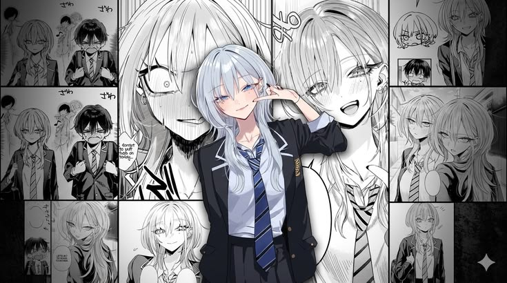

INI MY BINI GUWAAAA!!!

Hayamiya Mio adalah karakter fiksi dari manga/komik Jepang, atau bisa dibilang my bini guwa (lol).
Jadi gini ceritanya, dia itu tokoh utama cewek dari manga Haimiya-senpai wa Kowakute Kawaii. Arti judulnya kurang lebih "Senior Haimiya itu serem tapi gemesin ><".
Nih guwah perkenalkan calon mbg guwa:
- Umurnya 16 tahun, masih SMA. Rambutnya perak/putih khas animek, matanya tajam banget (bagian fav guwa jier), dan ada tahi lalat di bawah mata yang membuat dia makin adem ayem dilihatnya.
- Ngomongnya pake logat Kansai (dialek Osaka) walaupun belum pernah denger suaranya😹. Yang jelas logat Kansai itu kayak logat Jawa Timur-nya Jepang — medok, akrab, dan kocak. Jadi walaupun mukanya galak, pas ngomong malah bikin meleleh ahay.
- Otaknya encer banget, nilai semua pelajaran di atas 90. Tapi jangan bayangin dia kutu buku😡, soalnya dia tuh penggemar berat makanan manis. Kalo ada kue atau permen, dijamin matanya langsung berbinar-binar kayak kucing liat ikan.
- Sifatnya agak kontras: dari luar keliatan angker dan cuek, dan terkadang membuat banyak orang menjauh. Tapi sebenernya baik hati, lembut, dan canggung secara sosial. Dia tipe yang susah punya teman, dan cuma deket sama satu orang cowok bernama Kurose (guwa tuh😏).
Jadi intinya, Hayamiya Mio tuh gadis galak yang bikin gemes, pintar, lucu logatnya, dan jatuhnya gap moe banget — yaitu istilah buat karakter yang keliatan serem tapi ternyata imut.
(Cocok banget kan dia sama guwa?😹)
—ramzy
Klik untuk membaca kisah guwa dan My bini guwa